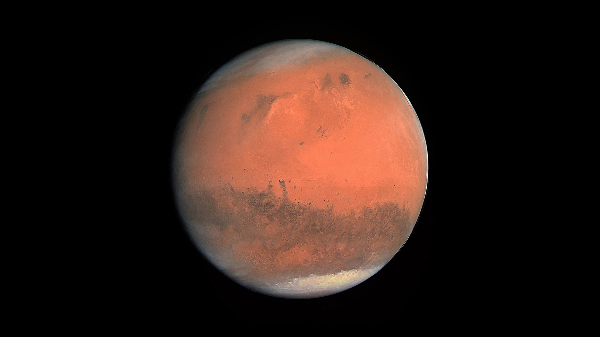

Exoplanets aren’t you’re incomprehensible physics terms like Quantum Entanglement or Wave-Particle Duality, they’re actually quite transparent. An exoplanet is simply a planet outside of our solar system that orbits a host star. This in itself isn’t too interesting, but Earth-like habitable exoplanets are what get people engaged. The process of finding them isn’t too difficult either. The first overall step to find most habitable planets is to determine whether it’s within their star's Goldilocks zone, meaning they are just far enough to have liquid water on their surface. Liquid water is the essence of life; it’s why we could thrive on this planet and where our tree of life sprouted.
But even if the planet is in the Goldilocks zone, water isn’t guaranteed. If no H2O is present anywhere on the planet, you’ve struck out. This is the difficulty in finding a suitable planet because our species is too ridiculously picky. In this hypothetical situation, let's say there is water—now what? Now we have to determine whether its atmosphere is breathable. It’s not necessary for the atmosphere to have a healthy amount of oxygen, but for us to be able to live on it, it has to. This can be explained by how our bodies are built. We’re aerobic beings, meaning we use oxygen as our fuel, but a countless number of living things don’t need it, signifying that they’re anaerobic. Our atmosphere is made up of a pleasant 78 percent nitrogen, 21 percent oxygen, 0.9 percent argon, and 0.1 percent other gases. Finding another planet with nearly identical proportions isn’t as difficult as other criteria, but still is a pain when there are an estimated 100-200 billion planets in our galaxy alone.
Alright, let’s say we’ve checked that off the list; ignoring all other outlandish, wacky, and delirious circumstances a planet and its solar system could be in, and neglecting many crucial things like planetary stability, magnetic field, and stable orbit—that would make this blog post way too long—we can doubtfully say we’ve made it. What happens now? I’ll tell you… nothing. We write it down in a little notebook, write a research paper on it, and keep on looking for more. The reality is, we don’t have any feasible way of reaching any of these planets that are millions of light years away with our current technology. Our best bet at becoming an interplanetary species is terraforming Mars, and who knows how long that’ll take? But it’s not all bad; now and then we do find planets that are near us, but it’s still borderline impossible to reach them.
To say it with full gravity, the future isn’t too bright in relation to any type of exoplanet expedition. We don’t have any resources, technology, or capability to get us there in any understandable time or way. One light year is 5,879,000,000,000 (5.879 trillion) miles, and the closest habitable exoplanet, Proxima Centauri b, is approximately 4.2 light-years away. For reference, on the day this blog was published, Neptune sat 4 light-hours from us. That is still stupendously far away.
I don’t doubt that one day, mankind will step foot on a habitable exoplanet, but that’ll be in a great deal of time. For now, though, I do believe we should keep searching; who knows, maybe aliens are sending us messages as we speak, we’re just not looking the right way. Maybe they’re looking at us through their ultra-modern high-zoom telescopes laughing because we’re looking in the wrong places. Only (a really long) time will tell.